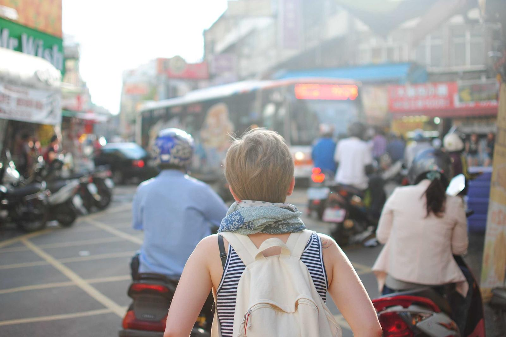
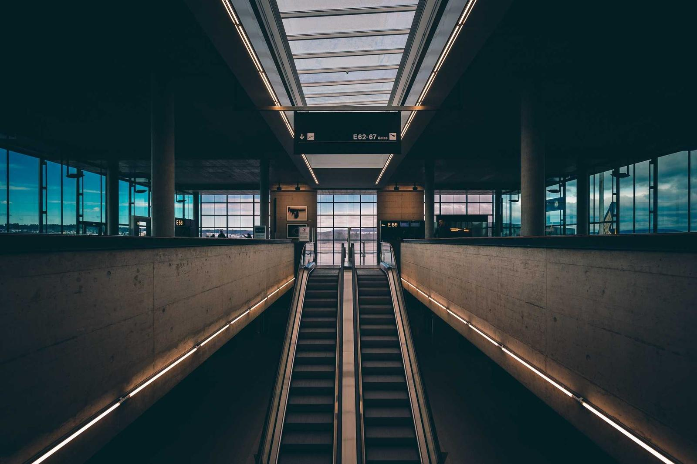

Laboratório Analógico
Negativo
→ Positivo
Envie os scans do rolo, recorte, ajuste e exporte na resolução original.
Laboratório Analógico
Envie os scans do rolo, recorte, ajuste e exporte na resolução original.
Laboratório Analógico
Simulador de revelação P&B: tempos tabelados e o efeito de push e pull na foto.

Laboratório Analógico
Simule a revelação e transforme seus negativos em positivos.
